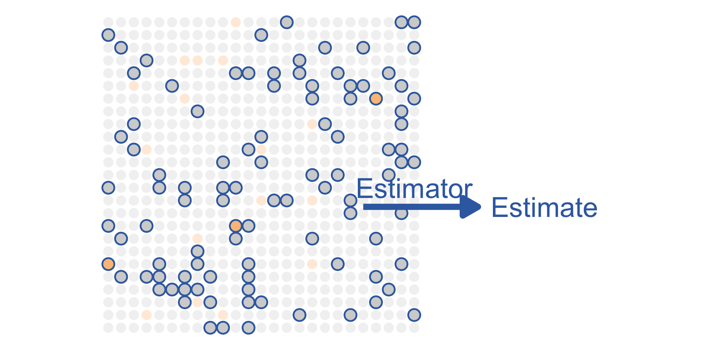

Lecture 10: Law of Large Numbers
STA237: Probability, Statistics, and Data Analysis I
PhD Student, DoSS, University of Toronto
Wednesday, June 14, 2023
Example: Canadian Student Tobacco, Alcohol and Drugs Survey
From Government of Canada page, Summary of results for the Canadaian Student Tobacco, Alcohol and Drugs Survey 2021-22
A total sample of \(61\ 096\) students in grades 7 to 12 (secondary I through V in Quebec) completed the survey … The weighted results represents over 2 million Canadian students…
[In 2021-22], 2% of students in grade 7 to 12 (\(43\ 000\)) reported current cigarette smoking …
Example: CSTAD
For simplicity, assume that
- there are \(2\) million Canadian students of which a proportion of \(\theta\) are smokers; and
\[\theta = \frac{\text{Number of smokers}}{\text{Number of all Canadian students}}\]
Example: CSTAD
For simplicity, assume that
- there are \(2\) million Canadian students of which a proportion of \(\theta\) are smokers; and
- the survey randomly selects \(50\ 000\) participants with an equal probability.
While \(\theta\) is unknown, we use the survey to estimate the quantity based on \(n=50\ 000\) survey responses.
\[T_{50\ 000} = \frac{\text{Number participants who smoke}}{\text{Number of all participants}}\]
Populations and samples

In studying data, we call the collection of objects being studied the population of interest and the quantity of interest the parameter.

The subset of the objects collected in the data is the sample and an estimator is a rule using sample that estimates a parameter. The resulting value is an estimate of the parameter.
Example: CSTAD

- The population is the \(2\) million Canadian students in grades 7 to 12.
- The parameter is the proportion of smokers, \(\theta\).

- The sample is \(50\ 000\) survey participants.
- \(T_{50\ 000}\) is an estimator of \(\theta\).
Example: CSTAD

The estimator \(T_{50\ 000}\) is a random variable since the sampling process is random.
Thus, it has a distribution.
Statistic and sampling distribution
An estimator is a statistic but a statistic isn’t necessarily an estimator.
A statistic is a function of a sample and the quantity computed from the function.
Let \(T=h\left(X_1,X_2,\ldots,X_n\right)\) be a statistic based on a random sample \(X_1\), \(X_2\), \(X_3\), , \(X_n\). The probability distribution of \(T\) is called the sampling distribution of \(T\).
Example: CSTAD
\[T_{50\ 000} = \frac{\text{Number participants who smoke}}{\text{Number of all participants}}\]
Let \(n=50\ 000\) and \(T_{n}=\left.\sum_{i=1}^n X_i\right/n\) where
\[X_i=\begin{cases} 1 & i\text{th survey participant} \\ & \quad\text{is a smoker}\\ 0 & \text{otherwise}\end{cases}\]
- \(T_n\) is an example of an estimator.
- We can derive the distribution of \(T_n\) based on \(X_i\)s.
- Based on the distribution, we can assess whether the estimator is a “good” estimator.
Example: CSTAD
\[T_{n}=\frac{1}{n}\sum_{i=1}^n X_i\]
where
\[ X_i=\begin{cases} 1 & i\text{th survey participant} \\ & \quad\text{is a smoker}\\ 0 & \text{otherwise}\end{cases} \]
- \(E\left(T_n\right)=E\left(\overline{X}_n\right)\)
With a very large \(n\), let’s assume selection of each survey participant is independent and the probability of selecting a smoker remains identical.
- \(=E\left(X_1\right)\)
The probability that a randomly selected student is a smoker is the proportion of smokers in the student population, \(\theta\).
- \(=\theta\)
Example: CSTAD
\[T_{n}=\frac{1}{n}\sum_{i=1}^n X_i\]
where
\[X_i\sim\text{Ber}(\theta)\] for all \(i\in\{1,2,\ldots,n\}\) independently.
- \(E\left(T_n\right)=E\left(\overline{X}_n\right)=\theta\)
- In words, the expected value of the estimator is the parameter.
- This is a desirable trait for an estimator in general.
Bias and unbiased estimator
\(T_n\) is an example of an unbiased estimator of \(\theta\).
A sample mean of a random sample is an unbiased estimator of the population mean in general.
Let \(T\) be an estimator of \(\theta\). The bias of \(T\) is
\[E\left[T\right]-\theta\]
and we say \(T\) is unbiased when the bias is \(0\).
Example: CSTAD
How about the \(\text{Var}\left(T_n\right)?\)
- A good estimator will have a small variance which implies less variability away from the parameter.
- \(\text{Var}\left(T_n\right)=\text{Var}\left(\overline{X}_n\right)\)
- \(\phantom{\text{Var}\left(T_n\right)}=\text{Var}\left(\frac{1}{n}\sum_{i=1}^nX_i\right)\)
- \(\phantom{\text{Var}\left(T_n\right)}=\frac{1}{n^2}n\text{Var}\left(X_1\right)\)
- \(\phantom{\text{Var}\left(T_n\right)}=\frac{1}{n}\text{Var}\left(X_1\right)\)
A larger sample size leads to less variability in the estimator.
\[T_{n}=\frac{1}{n}\sum_{i=1}^n X_i\]
where
\[X_i\sim\text{Ber}(\theta)\] for all \(i\in\{1,2,\ldots,n\}\) independently.
\(E[T_n]=\theta\)
Example: CSTAD
- As you increase the sample size \(n\), the sampling distribution of \(T_n\) becomes narrower and narrower around its mean, \(\theta\).
- As we take \(n\) to infinity, \(T_n\) will equal the constant \(\theta\).
- We say that \(T_n\) converges in probability to \(\theta\) .
Convergence in probability
The definition works when \(W\) is a constant - i.e., \(P\left(W=w\right)=1\) for some constant \(w\).
Let \(Y_1\), \(Y_2\), \(Y_3\), … be an infinite sequence of random variables, and let \(W\) be another random variable. We say the sequence \(\left\{Y_n\right\}\) converges in probability to \(W\) if
\[\lim_{n\to\infty}P\left(\left|Y_n-W\right|\ge\varepsilon\right)=0\]
for all \(\varepsilon >0\), and we write
\[Y_n\overset{p}{\to}W.\]
Example: Convergence in probability to a constant
Suppose \(Z_n\sim\text{Exp}(n)\) for \(n=1,2,\ldots\), and \(y=0\). Let \(\varepsilon\) be any positive number.
- \(\phantom{=}P\left(\left|Z_n - y\right|\ge \varepsilon\right)\)
- \(=P\left(Z_n\ge \varepsilon\right)\)
- \(=\int_\varepsilon^\infty ne^{-nu}du= e^{-n\varepsilon}\)
\[e^{-n\varepsilon}\to0\quad\text{as}\quad n\to\infty\]
\[\implies Z_n\overset{p}{\to}y\]
Example: Convergence in probability to a random variable
Let \(U\sim U(0,1)\). Define \(X_n\) by
\[X_n=\begin{cases}1 & U\le \frac{1}{2}-\frac{1}{n} \\ 0 & \text{otherwise}\end{cases}\]
and \(Y\) by
\[Y=\begin{cases}1 & U\le \frac{1}{2} \\ 0 & \text{otherwise}\end{cases}\]
For any \(\varepsilon>0\),
- \(\phantom{=}P\left(\left\lvert X_n-Y\right\rvert\ge \varepsilon \right)\)
The event \(\{X_n\neq Y\}=\{\left|X_n- Y\right|>0\}\) implies \(\{\left|X_n-Y\right|\ge \varepsilon\}\) for any \(\varepsilon>0\).
- \(\le P\left(X_n\neq Y\right)\)
Example: Convergence in probability to a random variable
Let \(U\sim U(0,1)\). Define \(X_n\) by
\[X_n=\begin{cases}1 & U\le \frac{1}{2}-\frac{1}{n} \\ 0 & \text{otherwise}\end{cases}\]
and \(Y\) by
\[Y=\begin{cases}1 & U\le \frac{1}{2} \\ 0 & \text{otherwise}\end{cases}\]
For any \(\varepsilon>0\),
- \(\phantom{=}P\left(\left\lvert X_n-Y\right\rvert \ge \varepsilon \right)\)
- \(\le P\left(X_n\neq Y\right)\)
- \(=P\left(\frac{1}{2}-\frac{1}{n} < U \le \frac{1}{2}\right)\)
Example: Convergence in probability to a random variable
Let \(U\sim U(0,1)\). Define \(X_n\) by
\[X_n=\begin{cases}1 & U\le \frac{1}{2}-\frac{1}{n} \\ 0 & \text{otherwise}\end{cases}\]
and \(Y\) by
\[Y=\begin{cases}1 & U\le \frac{1}{2} \\ 0 & \text{otherwise}\end{cases}\]
For any \(\varepsilon>0\),
- \(\phantom{=}P\left(\left\lvert X_n-Y\right\rvert \ge \varepsilon \right)\)
- \(\le P\left(X_n\neq Y\right)\)
- \(=P\left(\frac{1}{2}-\frac{1}{n} < U \le \frac{1}{2}\right)\)
- \(=\frac{1}{n}\)
\[ \lim_{n\to\infty} P\left(\left\lvert X_n-Y\right\rvert \ge \varepsilon \right) = 0\]
\[\implies X_n\overset{p}{\to}Y\]
Law of large numbers
Chebyshev’s inequality
Any random variable \(Y\) with \(E\left(Y\right)<\infty\) and any \(a>0\) satisfy
\[P\left(\left|Y-E\left(Y\right)\right|\ge a\right)\le \frac{\text{Var}\left(Y\right)}{a^2}.\]
Chebyshev’s inequality
Consider a discrete random variable \(Y\) with \(E(Y)=\mu<\infty\) and with positive probability masses at \(y_i\) for \(i=1,2,\ldots\).
- \(\text{Var}(Y)=E\left[\left(Y-\mu\right)^2\right]\)
- \(\phantom{\text{Var}(Y)}=\sum_{i=1}^\infty \left(y_i-\mu\right)^2 P\left(Y=y_i\right)\)
\(\left(y_i-\mu\right)^2\ge0\) and \(P\left(Y=y_i\right)\ge0\) for all \(i\).
- \(\phantom{\text{Var}(Y)}\ge \sum_{i:\left\lvert y_i-\mu\right\rvert\ge a}\left(y_i-\mu\right)^2 P\left(Y=y_i\right)\qquad a>0\)
- \(\phantom{\text{Var}(Y)}\color{DarkOrchid}{\ge} \sum_{\color{DarkOrchid}{i:\left\lvert y_i-\mu\right\rvert\ge a}} \color{DarkOrchid}{a^2} P\left(Y=y_i\right)\)
- \(\phantom{\text{Var}(Y)}=a^2P\left(\left\lvert Y-\mu\right\rvert\ge a\right)\)
This proves Chebyshev’s inequality for discrete random variables.
If interested, see the proof for continuous random variables in Section 13.2 of Dekking et al.
You won’t be tested on understanding the proof but understanding the implications and using the inequality.
Example: Quick exercise 13.2 from Dekking et al.
Calculate \(P\left(\left|Y-\mu\right|<k\sigma\right)\) for \(k=1,2,3\) when \[Y\sim\text{Exp}(1),\] \[\mu=E\left(Y\right),\] and \[\sigma^2=\text{Var}\left(Y\right).\]
Compare the computed values with the Chebyshev’s inequality bounds.
Exact probability
- \(\phantom{=}P\left(\left|Y-\mu\right|<k\sigma\right)\)
- \(=P\left(1 - k < Y < 1 + k\right)\)
- \(=P\left(Y < 1+k\right)\)
- \(=F_Y(1+k)\)
Chebyshev’s inequality bound
- \(\phantom{=}P\left(\left|Y-\mu\right|<k\sigma\right)\)
- \(=1-P\left(\left|Y-\mu\right|\ge k\sigma\right)\)
- \(\ge1-\frac{\sigma^2}{k^2\sigma^2}=1-\frac{1}{k^2}\)
- Chebyshev’s inequality provides a lower bound for the probability of a random variable falling within a certain distance from its mean.
Example: Sample mean
Apply Chebyshev’s inequality to \(\overline{X}_n=\left.\sum_{i=1}^n X_i\right/n\) where \(X_1\), \(X_2\), …, \(X_n\) are random samples from a population. Let \(\mu\) and \(\sigma^2\) be the population mean and variance.
We will assume random samples from a population are independent and identically distributed.
For any \(\varepsilon > 0\),
\[\phantom{=}P\left(\left|\overline{X}_n-\mu\right|>\varepsilon\right) \le \frac{\sigma^2}{n \varepsilon^2}\]
What happens as we take \(n\) to infinity?
(Weak) law of large numbers
The proof shown in class requires a finite variance but you can prove the law without the assumption.
There is the strong law of large number, which states \[P\left(\lim_{n\to\infty}\overline{X}_n=\mu\right)=1\] but we will focus on the WLLN in this course.
Suppose \(X_1\), \(X_2\), …, \(X_n\) are independent random variables with expectation \(\mu\) and variance \(\sigma^2\). Then for any \(\varepsilon > 0\),
\[\lim_{n\to\infty}P\left(\left|\overline{X}_n-\mu\right|>\varepsilon\right)=0,\]
where \(\overline{X}_n=\left.\sum_{i=1}^n X_i\right/n\).
That is, \(\overline{X}_n\) converges in probability to \(\mu\).
Example: Sample means from a normal distribution
Roughly speaking, the law states that a sample mean converges to the population mean as we increase the sample size.
For example, we can observe \(\overline{X}_n\) converging quickly to \(0\) when we simulate
\[X_i\sim N(0,1)\]
for \(i=1,2,3,\dots,100\).

Example: Sample means from a distribution without a finite mean
The sample mean does not converge when the population mean doesn’t exist or is not finite.
Cauchy is an example of a distribution with out an expectation.
Simulating \(\overline{X}_n\) for a Cauchy distribution does now show a convergence even at \(n=1\ 000\).

Simulation and LLN
Computer programs can mimic random samples - e.g.,
rnorm().We have been using simulating random samples with R to estimate expectations and probabilities.
Estimating probabilities via simulation and LLN
Suppose we are interested in
\[\theta=P\left(X\in \mathcal{K}\right),\] where \(X\) is some random variable and \(\mathcal{K}\) is a subinterval of \(\mathbb{R}\).
Assume that while you don’t know the distribution of \(X\), you can obtain \(n\) random samples of \(X\) - \(X_1\), \(X_2\), …, \(X_n\).
For example, we haven’t computed the full distribution of winning a blackjack round but we can simulate it.
Let \(T_n=\left.\sum_{i=1}^n \mathcal{I}_{X_i\in\mathcal{K}}\right/n\) where
\[\mathcal{I}_{X_i\in\mathcal{K}}=\begin{cases} 1 & X_i\in\mathcal{K} \\ 0 & \text{otherwise}\end{cases}\]
This is equivalent to counting the number of times \(X_i\in\mathcal{K}\) and divided by \(n\).
Based on the notion of the probability as a long-term relative frequency, \(T_n\) is an estimator of \(\theta\).
Estimating probabilities via simulation and LLN
- \(P\left(\mathcal{I}_{X_i\in\mathcal{K}}=1\right)=P\left(X_i\in\mathcal{K}\right)=\theta\)
- \(P\left(\mathcal{I}_{X_i\in\mathcal{K}}=0\right)=P\left(X_i\notin\mathcal{K}\right)=1-\theta\)
\[\implies \mathcal{I}_{X_i\in\mathcal{K}}\sim\text{Ber}\left(\theta\right)\] and
\[E\left[T_n\right]=\theta\]
\[\implies T_n\overset{p}{\to}\theta\]
With a large \(n\), we can expect the unbiased estimator to provide an estimate close to the parameter of interest.
\[\theta=P\left(X\in \mathcal{K}\right)\]
\[T_n=\left.\sum_{i=1}^n \mathcal{I}_{X_i\in\mathcal{K}}\right/n\]
where …
\[\mathcal{I}_{X_i\in\mathcal{K}}=\begin{cases} 1 & X_i\in\mathcal{K} \\ 0 & \text{otherwise}\end{cases}\]
R worksheet
Install learnr and run R worksheet
Click here to install
learnron r.datatools.utoronto.caFollow this link to open the worksheet
If you see an error, try:
- Log in to r.datatools.utoronto.ca
- Find
rlesson09from Files pane - Click Run Document
Other steps you may try:
- Remove any
.Rmdand.Rfiles on the home directory of r.datatools.utoronto.ca - In RStudio,
- Click
Tools>Global Options - Uncheck “Restore most recently opened project at startup”
- Click
- Run
install.packages("learnr")in RStudio after the steps above or click here
Summary
- A statistic is a quantity derived from data.
- An estimator is a function on sample for estimating a parameter in a population of interest.
- The law of large numbers states that the mean of random samples converge to the population mean.
- Estimating probabilities and expectations via simulation utilizes the law of large numbers.
Practice questions
Chapter 13, Dekking et al.
Read section on “Recovering the probability density function” on page. 189
Quick Exercises 13.1, 13.3
Exercises except 13.2 to 13.11
See a collection of corrections by the author here
© 2023. Michael J. Moon. University of Toronto.
Sharing, posting, selling, or using this material outside of your personal use in this course is NOT permitted under any circumstances.